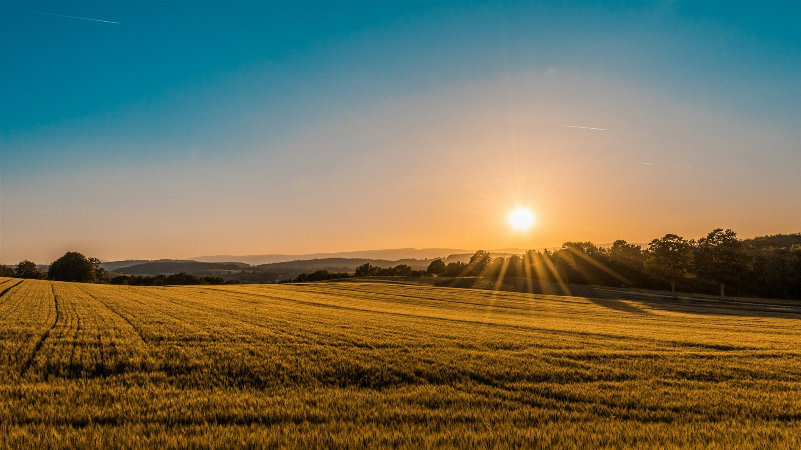
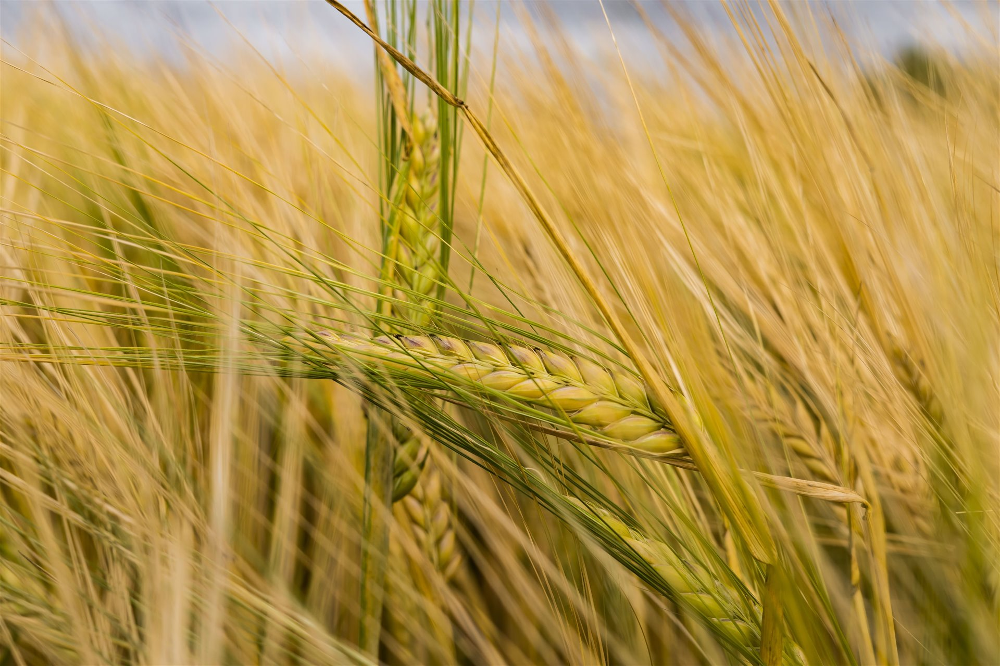
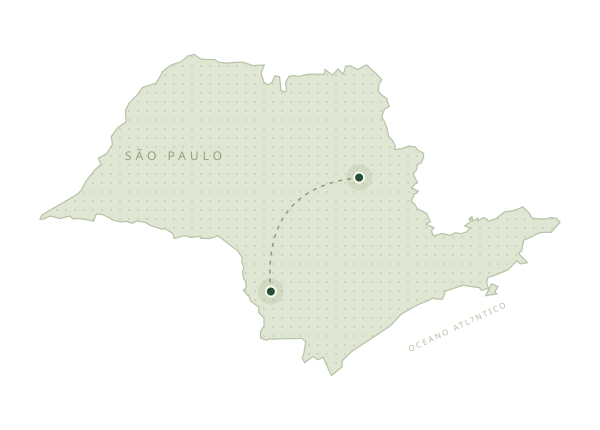

Compramos e vendemos soja, milho, trigo e sorgo. Uma rede de clientes e parceiros em todo o estado de São Paulo que traz mais confiança para cada negociação.
Fale com o comercial ↗
GENTE DA NOSSA TERRA. AO LADO DO PRODUTOR.
Raízes no campo.
Olhar no futuro.
Da força da nossa terra à confiança de bons negócios.
Conectamos produtores, cereais e oportunidades.
+
CONTINUE EXPLORANDO↓CULTIVANDO CONFIANÇA DESDE 2011ITABERÁ · SÃO PAULODO INTERIOR, PARA NOVAS POSSIBILIDADES.
01 / NOSSA ESSÊNCIA
O CAMPO É DE ONDE VIEMOS.O que nos move
vem da terra.
Somos uma empresa familiar. E acreditamos em negócios que crescem com confiança.
A BM Cereais nasceu em 2011, com Bruno Tomaz Ferreira, em Itaberá, no interior de São Paulo. Desde então, trabalhamos para aproximar o produtor das melhores oportunidades na comercialização de soja, milho, trigo e sorgo.
Vamos construir essa parceria
DA TERRA VEM A NOSSA ESSÊNCIA.
NOSSA HISTÓRIA COMEÇA EM
2011↗Origem familiar.
Compromisso de verdade.
Honestidade, respeito e competência fazem parte de cada relação com nossos clientes, colaboradores e parceiros.
BM Cereais GENTE DA NOSSA TERRA.
02 / SOLUÇÕES QUE CONECTAM
PRESENTES EM CADA ETAPA.Seu negócio avança.
A gente vai junto.
Comercialização, cuidado com os grãos e logística.
Estrutura para fazer o agro acontecer.
Nossas unidades de Itaberá e Descalvado oferecem serviços de limpeza, secagem e armazenagem, com atenção à qualidade dos produtos em cada etapa.
Converse sobre sua demanda ↗Transportamos os produtos comercializados com frota própria, renovada e monitorada. Também contamos com transportadoras parceiras especializadas no nosso negócio.
Planeje seu transporte com a gente ↗BM CEREAIS
CONEXÕES QUE GERAM OPORTUNIDADES
Entre quem planta
e o que vem pela frente.
03 / O QUE A NOSSA TERRA PRODUZ
QUALIDADE EM CADA GRÃO.Pequenos grãos.
Grandes possibilidades.
Quatro culturas. Um mesmo compromisso:
conectar o campo a bons negócios.
01 /↗02 /↗03 /↗04 /↗
Soja
Conexões que rendem.
Milho
Força que movimenta.
Trigo
Qualidade que conecta.
Sorgo
Novas possibilidades.
COMPRA E VENDA DE CEREAIS
Tem uma oportunidade? Vamos conversar. ↗
O QUE CULTIVAMOS TODOS OS DIAS
Antes de bons negócios,
boas relações.
Transformar.
Junto com o produtor.
Estamos de mãos dadas com quem produz, contribuindo para o futuro que o Brasil representa para o mundo e buscando a satisfação de clientes e parceiros.
Crescer.
Com trabalho sério.
Conquistar novos mercados e a confiança de mais clientes, atendendo às exigências de cada demanda com eficiência em todo o processo.
Fazer bem.
E fazer o que é certo.
Clientes em primeiro lugar. Qualidade em constante evolução e empenho em oferecer os melhores preços. Sempre com respeito, ética, honestidade e transparência.
04 / PERTO DE QUEM PRODUZ
Presença no interior.
Conexões por São Paulo.
Da nossa matriz em Itaberá à filial em Descalvado, contamos também com uma rede de armazéns parceiros em todo o estado.
Itaberá, São Paulo
Onde a nossa história começou e onde fica a matriz da BM Cereais.
Explorar no mapa ↗UMA REDE QUE CONECTA.SP / BRASIL

Itaberá MATRIZDescalvado FILIAL NOSSAS UNIDADES
O PRÓXIMO BOM NEGÓCIO COMEÇA AQUI.
Vamos cultivar
uma boa parceria?
Conte o que você precisa. Nossa equipe está pronta para conversar sobre cereais, serviços e novas oportunidades.
E-MAILbmcereais.logistica@gmail.com↗↗TELEFONE(15) 3562-1591↗Fale com a gente pelo WhatsApp
Itaberá MATRIZ
(15) 99637-4635(15) 99153-8217Descalvado FILIAL
(15) 99777-9446(19) 97124-7993Da nossa família,
para o seu próximo passo.